Red Hat Enterprise Linux 8 is shipped with the default desktop environment GNOME 3.
GNOME 3 represents a presentation layer that provides a graphical user interface as well as the focused working environment, which enables you to access all your work from one place.
GNOME 3 provides two essential environments:
Both environments can use two different protocols to build a graphical user interface:
- The X11 protocol, which uses X.Org as the display server.
The Wayland protocol, which uses GNOME Shell as the Wayland compositor and display server.
This solution of display server is further referred as GNOME Shell on Wayland.
Note
Note that the graphics based on the Wayland protocol are not available for virtual machines that use the qxl driver.
You can find the current list of environments for which Wayland-based graphics are unavailable in the /usr/lib/udev/rules.d/61-gdm.rules file.
The default combination in Red Hat Enterprise Linux 8 is GNOME Standard environment using GNOME Shell on Wayland as the display server.
However, due to the section called “Current Wayland limitations”, you may want to switch the graphics protocol stack.
You may also want to swich from GNOME Standard to GNOME Classic.
For more information about graphics based on the Wayland protocol, see the section called “Key differences between the Wayland and X11 protocol”.
For information on how to switch the environments, see Selecting GNOME environment.
GNOME Standard user interface includes these major components:
Top barThe horizontal bar at the top of the screen provides access to some of the basic functions of GNOME Standard, such as the
Activities Overview, clock and calendar, system status icons, and thesystem menu.System menuThe
system menuis located in the top right corner, and enables you:- Updating settings
- Controlling the sound bar
- Finding information about your Wi-Fi connection
- Switching user
- Logging out
- Turning off the computer
Activities OverviewThe
Activities Overviewfeatures windows and applications views that let the user run applications and windows and switch between them.The
search entryat the top allows for searching various items available on the desktop, including applications, documents, files, and configuration tools.The vertical bar on the left side contains a list of favorite and running applications. You can add or remove applications from the default list of favorites according to your needs.
The workspace list displayed on the right side allows the user to switch between multiple workspaces, or move applications and windows from one workspace to another.
Message trayThe
message trayprovides access to pending notifications. Themessage trayshows when the user pressesSuper+M.
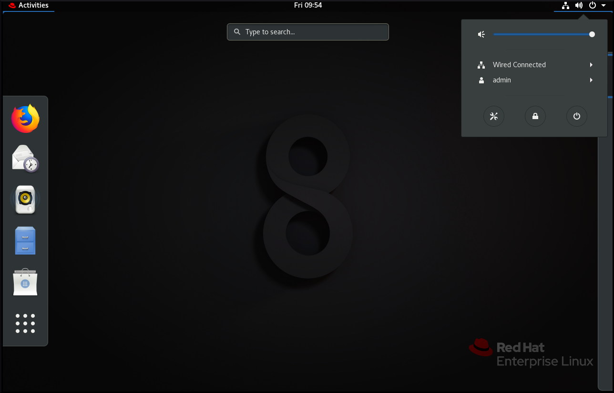
GNOME Classic represents a mode for users who prefer a more traditional desktop experience that is similar to GNOME 2 environment used with Red Hat Enterprise Linux 6. It is based on GNOME 3 technologies, and at the same time it includes multiple features similar to GNOME 2.
GNOME Classic user interface consists of these major components:
Applications and PlacesThe
Applicationsmenu is displayed at the top left of the screen. It gives the user access to applications organized into categories. The user can also open theActivities Overviewfrom that menu.The
Placesmenu is displayed next to theApplicationsmenu on the top bar. It gives the user quick access to important folders, for exampleDownloadsorPictures.TaskbarThe
taskbaris displayed at the bottom of the screen, and features:- A window list
- A notification icon displayed next to the window list
- A short identifier for the current workspace and total number of available workspaces displayed next to the notification icon
Four available workspaces
In GNOME Classic, the number of workspaces available to the user is by default set to 4.
Minimize and maximize buttons
Window titlebars in GNOME Classic feature the minimize and maximize buttons that let the user quickly minimize the windows to the window list, or maximize them to take up all of the space on the desktop.
A traditional
Super+Tabwindow switcherIn GNOME Classic, windows in the
Super+Tabwindow switcher are not grouped by application.System menuThe
system menuis located in the top right corner, and enables you:- Updating settings
- Controlling the sound bar
- Finding information about your Wi-Fi connection
- Switching user
- Logging out
- Turning off the computer

The default desktop environment for Red Hat Enterprise Linux 8 is GNOME Standard with GNOME Shell on Wayland as the display server.
However, due to the section called “Current Wayland limitations”, you may want to switch the graphics protocol stack.
You may also want to swich from GNOME Standard to GNOME Classic. See the section called “GNOME environments” for differences between these two environments.
For switching between various combinations of GNOME environment and graphics protocol stacks, use the following procedure.
Procedure
From the login screen (GDM), click the cogwheel next to the Sign In button.
Note
You cannot access this option from the lock screen. The login screen appears when you first start Red Hat Enterprise Linux 8 or when you log out of your current session.

From the drop-down menu that appears, select the option that you prefer.
Note
Note that in the menu that appears on the login screen, the X.Org display server is marked as X11 display server.
Important
The change of GNOME environment and graphics protocol stack resulting from the above procedure is persistent across user logouts, and also when powering off or rebooting the computer.
This section describes various approaches that you can use to launch available applications in GNOME 3.
Procedure
-
Press
Alt+F2to make theEnter a Commandscreen appear. Write the name of the executable into the
Enter a Commandscreen: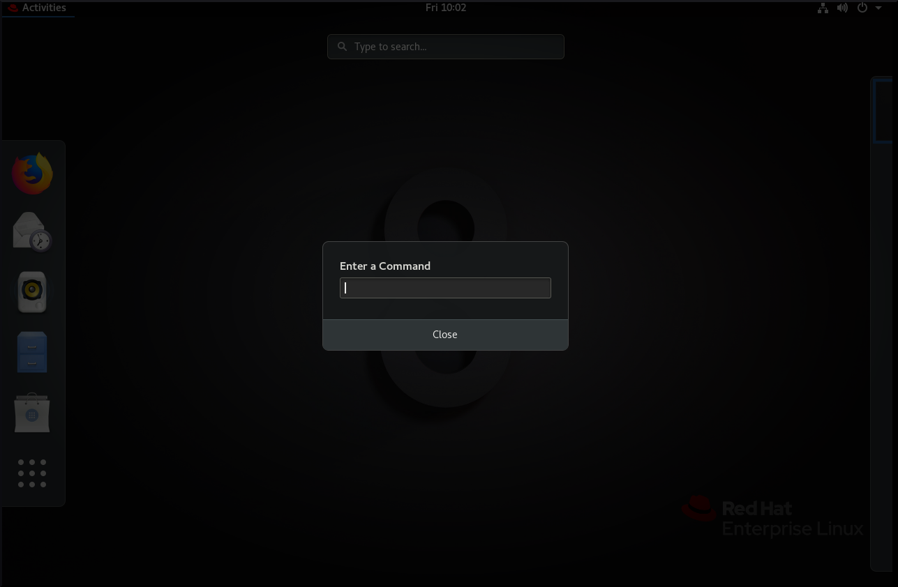
This approach works both in GNOME Standard and GNOME Classic environment.
Procedure
In GNOME Standard, go to
Activities Overviewand click on theShow Applicationsicon in the vertical bar on the left side.Note that you can choose between displaying all or just the frequent applications by using the
Frequent/Allswitch at the bottom of the screen.Alternatively, you can also start typing the name of the required application in the
search entry.
Procedure
-
In GNOME Classic, go to
Applicationsmenu. Choose the required application from one of the available categories.
The available categories include:
- Favorites
- Accessories
- Internet
- Office
- Sound & Video
- Sundry
- System Tools
- Utilities
Procedure
- Open a terminal.
- Type the name of the required application on the command line.
This approach works both in GNOME Standard and GNOME Classic environment.
This section describes various approaches that you can use to install a new application in GNOME 3.
Procedure
Use one of the approaches described in Launching applications to launch GNOME Software.
Note
GNOME Software is a utility, which enables you to install and update applications and gnome-shell extensions through a graphical environment. This utility is based on the PackageKit technology, which serves as its back end. GNOME Software offers mainly the desktop applications, which are the applications that include the
*.desktopfile. The available applications are grouped into multiple categories according to their purpose.Choose the application to be installed from one of the available categories.
- Audio & Video
- Communication & News
- Productivity
- Graphics & Photography
- Add-ons
- Developer Tools
Utilities
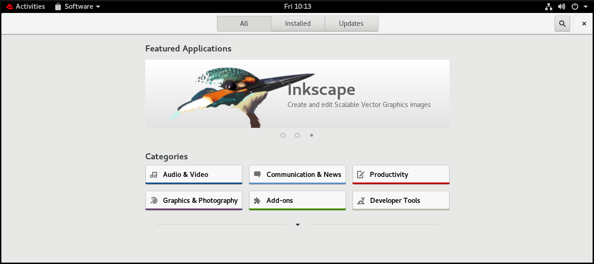
Click the selected application, and then click the Install button.

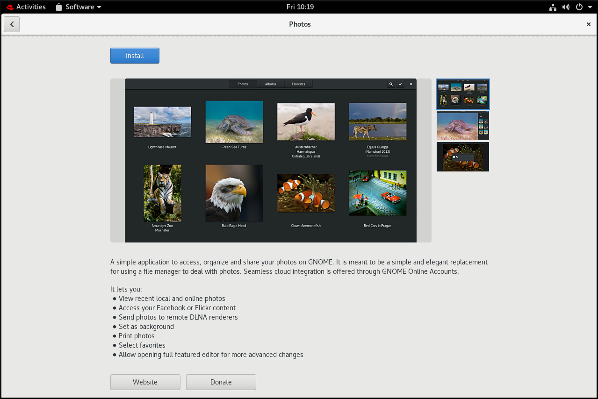
Note
Add-ons include for example GNOME Shell extensions, codecs or fonts.
Procedure
- Start opening a file that is associated with an application or applications that are currently not installed on your system.
- GNOME will automatically identify suitable application in which the file can be opened, and will offer to download the application.
Procedure
- Download the required rpm package.
Open the directory that includes the downloaded rpm in the Nautilus file manager.
Note
The downloads are by default stored in the
/home/user/Downloadsdirectory.- Double-click the icon of the rpm to install it.
Procedure
Start typing the name of the required application in the
search entry.
GNOME will automatically find the application in a respective repository, and will display the application’s icon.
Click the application’s icon that automatically appears to open GNOME Software.

Click again the icon of the application and finish the installation in GNOME Software as described above.

Procedure
- Open a terminal.
Run the
yum installcommand with the name of the required application:~]# yum install <application_name>
In RHEL 8, the Desktop icons functionality is no longer provided by the Nautilus file manager, but by the desktop icons gnome-shell extension available in the gnome-shell-extension-desktop-icons package.
Desktop icons in GNOME Classic
The GNOME Classic environment includes the gnome-shell-extension-desktop-icons package by default. Desktop icons are always on, and cannot be turned off. If you want to create a desktop icon for a file, you just need to put this file into the /Desktop directory, and the icon appears automatically.
Desktop icons in GNOME Standard
If you have only the GNOME Standard environment available, and not GNOME Classic, you must install gnome-shell-extension-desktop-icons.
After the package has been installed, you can switch the desktop icons on or off by using the Tweaks application:
Go to Tweaks, and select
Extensions-Desktop icons, and switch it on.
-
Put the required file into the
/Desktopdirectory, and the icon appears automatically on your desktop.
In Red Hat Enterprise Linux 8, sound is handled by the PulseAudio sound server that lets programs output the audio using the Pulseaudio daemon.
For more information on PulseAudio, see the pulseaudio man page.
To handle sound, you can use one of these two graphical applications in GNOME:
-
System menu -
Tweakstool -
GNOME Control Center
System menu is located in the top right corner, and it only enables you to set the intensity of the sound output or sound input through the sound bar. The sound bar for input sound is available only if you are running an application that is supposed to use an iternal microphone (built-in audio), such as some teleconference tools.
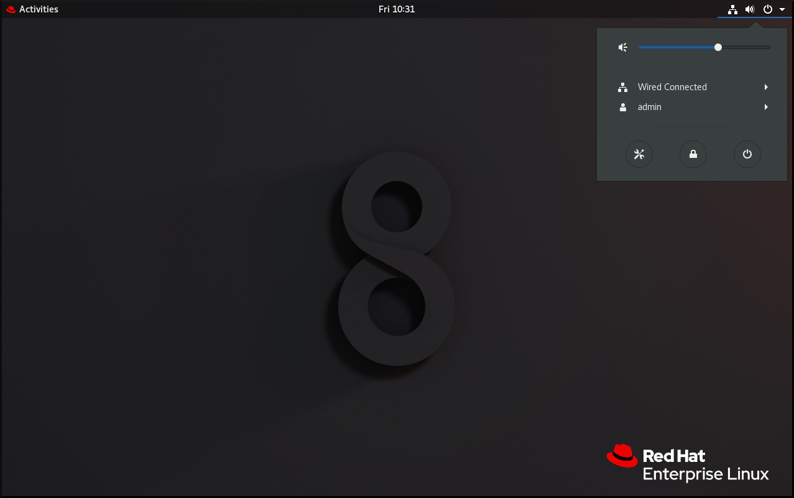
Tweaks tool only enables you to configure the Over-Amplification.

GNOME Control Center provides more options to configure sound. You can launch this tool by using one of the approaches described in Launching applications. Moreover, you can also launch it from the System menu by clicking on its icon.

When GNOME Control Center opens, choose Sound from the left vertical bar.

Through GNOME Control Center - Sound, you can configure the following:
-
Outputsound -
Inputsound -
Sound effects -
Applications
The Output and Input menus show only the built-in audio devices unless you connect any external device that can handle sound.
The Output menu enables you to select the required profile from available analog or digital profiles that are displayed depending on available output devices.
The Applications menu shows all currently running applications that can process sound, and allows you to amplify or lower the sound of a particular application.
GNOME Shell provides multiple tools to handle graphics and photography.
You can check the available tools under the Graphics & Photography menu in GNOME Software:
Open the GNOME software.
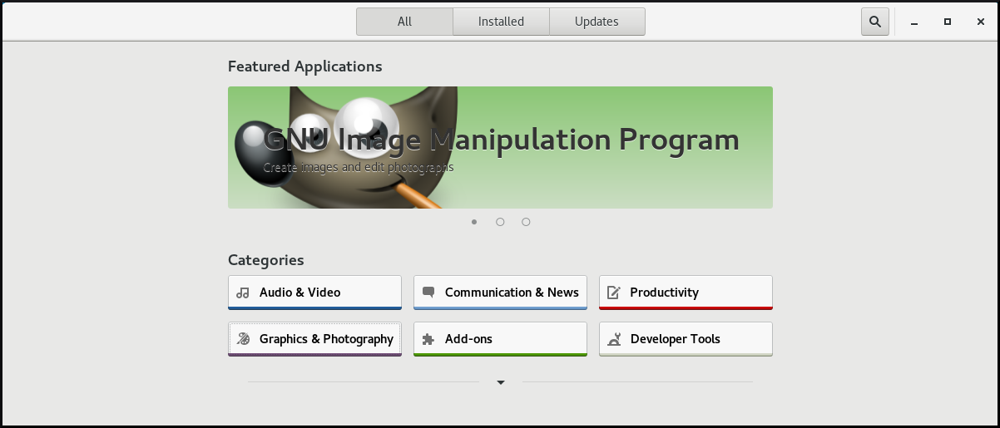
-
Go to
Graphics & Photography. 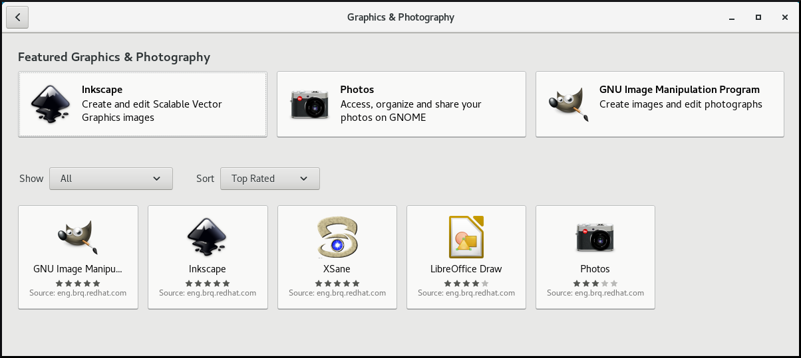
The available tools include:
PhotosFor accessing, organizisng and sharing your photos.
GNU Image Manipulation ProgramFor creating images and editing photographs.
InkspaceFor creating and editing scalable vector graphics images.
XSaneFor scanning images with a scanner.
LibreOffice DrawFor create and editing drawings, flow charts, and logos.
In GNOME Shell, printing can be set up using the GNOME Control center GUI.
Procedure
Use one of the approaches described in the section called “Launching applications” to start the GNOME Control center GUI.
Moreover, you can also start the GNOME Control center from the system menu in the top right corner by clicking on the "Settings" icon.
- When the GNOME Control center GUI appears, go to:
Devices → Printers
This section describes how to add a new printer using the GNOME Control center GUI.
Prerequisites
To be able to add a new printer using the GNOME Control center GUI, you must click on Unlock, which appears on the right side of the top bar, and authenticate as one of the following users:
- Superuser
-
Any user with the administrative access provided by
sudo(users listed within/etc/sudoers) -
Any user belonging to the
printadmingroup in/etc/group

Procedure
Open the Add Printer dialog.

Select one of the available printers (including also network printers), or enter printer IP address or the hostname of a printer server.
 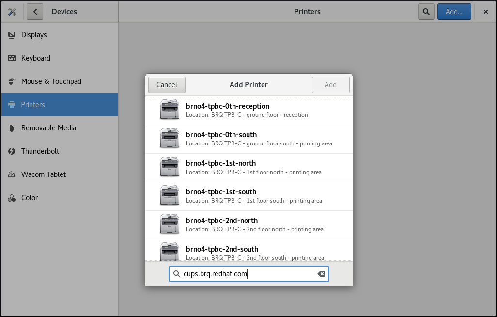
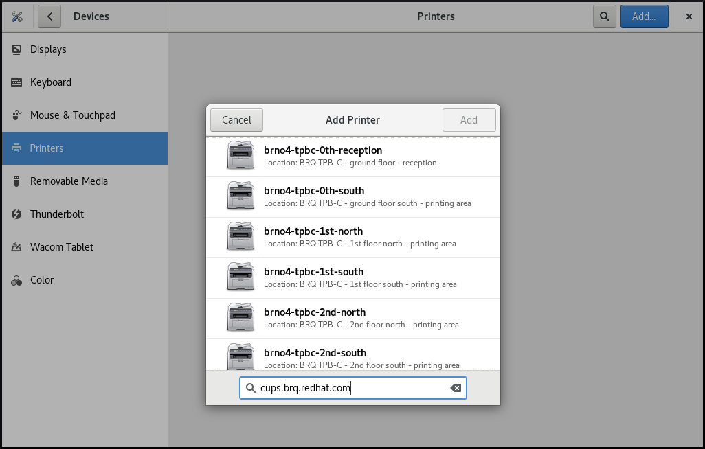
This section describes how to configure a new printer, and how to maintain a configuration of a printer using the GNOME Control center GUI.
Displaying printer’s settings menu
Procedure
- Click the "settings" button on the right to display a settings menu for the selected printer:
Displaying and modifying printer’s details
Procedure
-
Click
Printer Detailsto display and modify selected printer’s settings:
With this menu you can:
Search for DriversGNOME Control Center communicates with PackageKit that searches for a suitable driver suitable in available repositories.
Select from DatabaseThis option enables you to select a suitable driver from databases that have already been installed on the system.
Install PPD FileThis option enables you to select from a list of available postscript printer description (PPD) files that can be used as a driver for your printer.

Setting the default printer
Procedure
-
Click
Use Printer by Defaultto set the selected printer as the default printer:

Removing a printer
Procedure
-
Click
Remove Printerto remove the selected printer:
This section describes how to print a test page to make sure that the printer functions properly.
You might want to print a test page if one of the below prerequisites is met.
Prerequisites
- A printer has been set up.
- A printer configuration has been changed.
Procedure
Click the "settings" button on the right to display a settings menu for the selected printer:
-
Click
Printing Options→Test Page
Red Hat Enterprise Linux 8 includes the PipeWire media server, which ensures access to multimedia devices and media sharing between applications.
When running a remote desktop session on GNOME Shell on Wayland, PipeWire and the VNC server is used. The functionality of remote desktop session is provided by the gnome-remote-desktop and pipewire packages.
On X.Org, just VNC is needed to run a remote desktop session. This functionality on X.Org is provided by the vino package.
PipeWire is used also with teleconference tools such as BlueJeans when running on GNOME Shell on Wayland. In such case, the pipewire service is activated automatically when you start sharing your screen within the teleconference tool.
To check the status of the pipewire service, run:
~]$ systemctl --user status pipewire
You can customize the GNOME Shell environment for a particular user by using the Tweaks tool.
To open Tweaks, use one of the approaches described in the section called “Launching applications”.
To choose the required item that you want to customize, use the vertical menu on the left. For example you can choose the applications to start automatically when you log in by using the Statup Applications menu, or you can customize your top bar appearance by using the Top Bar menu.
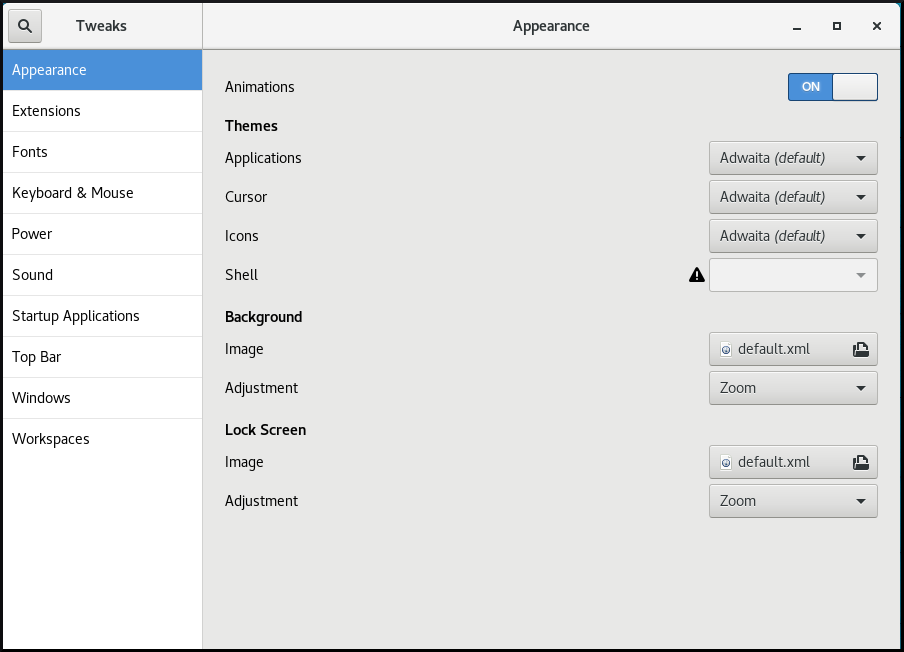

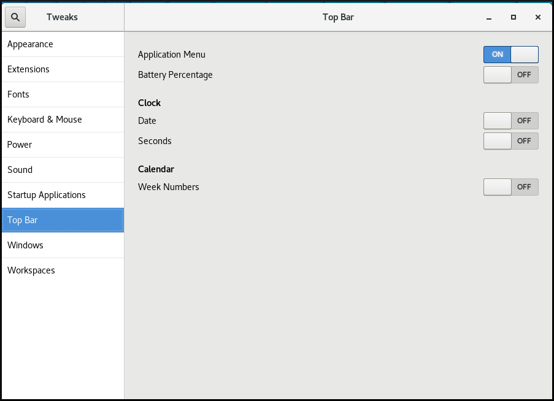